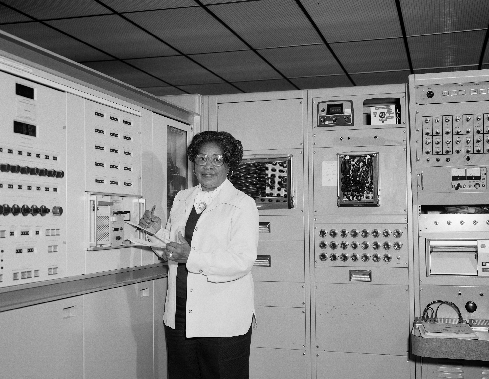

Mary Jackson
A Star at NASA

Mary Jackson working as an engineer at NASA.
Check out bellow some information about her:
- 1921 - Born in Hamptom, Virginia
- 1942 - Earned bachelor's degree in mathematics and physicial science from Hamptom University
- 1944 - Married to Levi Jackson, a sailor in the US Navy, and had two children
- 1951 - Started as a computer at the segregated West Area Computing Division
- 1953 - Accepted an offer to work for engineer Kazimierz Czarnecki in the Supersonic Pressure Tunnel
- 1954 - Petitioned the City of Hampton to allow her to attend classes at University of Virginia, held at the all-white Hampton High School
- 1958 - Became NASA's first African-American female engineer
- 1969 - Awarded Apollo Group Achievement
- 1970's - Noted for helping African-American children in her community create a miniature wind tunnel for testing airplanes
- 1979 - Achieved the most senior title within the engineering department
- 2005 - Dies at age of 83
Posthumous
- 2016 - She was featured in the book Hidden Figure: the American Dream and the Untold Story of the Black Women Who Helped Win the Space Race, which later became a movie
- 2019 - Awarded the Congressional Gold Medal
"Sometimes they [youngsters from the science club] are not aware of the number of black scientists, and don't even know of the career oportunities until it is too late."
Mary Jackson